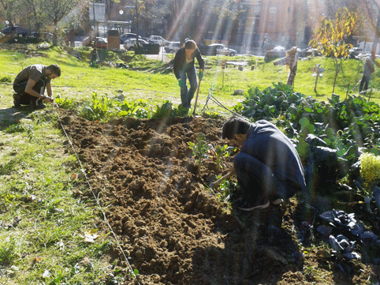
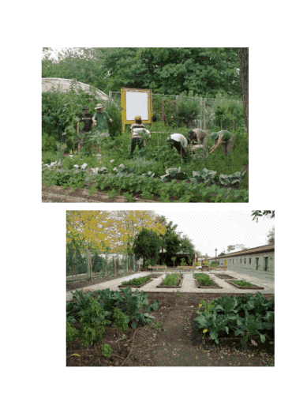
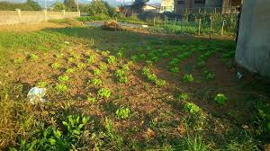

HUERTOS URBANOS DE MADRID
huertos por la comunidad y distritos de madrid
moratalad
HUERTO LA SALAMANDRA
El huerto del E.S. La Salamandra es un espacio social, comunitario, horizontal, abierto y accesible donde se cultivan hortalizas respetando los principios de la agroecología, disfrutan del trabajo en equipo y comparten los conocimientos y los frutos obtenidos.
HUERTA ESPINAKAS
Son un grupo de personas que decidieron crear un espacio hortelano en la ciudad abierto a todo el mundo. Se trata de un espacio para todas las vecinas, una huerta con una clara vocación de unir generaciones y compartir conocimientos.

HUERTO DEL RETIRO
El Centro de Información y Educación Ambiental El Huerto del Retiro se sitúa en los Jardines del Buen Retiro, junto a los Viveros de Estufas. En este espacio, desarrollan un programa de educación ambiental centrado en temas de agricultura y jardinería ecológica, en el conocimiento de los valores naturales, sociales y culturales de los Jardines del Buen Retiro y en promover entre la población conductas más responsables con el medio ambiente.

EL HUERTUCO
Este proyecto trata de crear un espacio común donde realizar actividades ligadas con el medioambiente donde poder disfrutar alrededor de un huerto ecológico, antiguo espacio degradado y sin uso.
Alrededor de este proyecto quieren crear un tejido social prácticamente inexistente en esta zona un lugar de encuentro donde todos puedan participar
